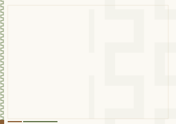

شهادة إتمام المستوى الأول — مدرسة رباط الحنابلة
تشهد مدرسة رباط الحنابلة بأن الطالبة
مجيدة عبد الحليم السويد
قد أتمّت المستوى الأول
بتقدير جيد جدًا، وبنسبة ٨٠٪
في العام الدراسي ٢٠٢٥–٢٠٢٦م
وقد تضمن المستوى الأول شرح المتون التالية:
- ١.ثلاثة الأصول
- ٢.القواعد الأربع
- ٣.نواقض الإسلام
- ٤.أخصر المختصرات
- ٥.متن الورقات في أصول الفقه
- ٦.الأربعون النووية
- ٧.فصول في الآداب
شهادة إتمام المستوى الثاني — مدرسة رباط الحنابلة
تشهد مدرسة رباط الحنابلة بأن الطالب
عبد الرحمن بن محمد الفهد
قد أتمّ المستوى الثاني
بتقدير ممتاز، وبنسبة ٩٤٪
في العام الدراسي ٢٠٢٥–٢٠٢٦م
وقد تضمن المستوى الثاني شرح المتون التالية:
- ١.كشف الشبهات
- ٢.مسائل الجاهلية
- ٣.عمدة الأحكام
- ٤.منظومة القواعد الفقهية
شهادة إتمام المستوى الثالث — مدرسة رباط الحنابلة
تشهد مدرسة رباط الحنابلة بأن الطالب
إبراهيم بن سعد المطيري
قد أتمّ المستوى الثالث
بتقدير جيد جدًا، وبنسبة ٨٧٪
في العام الدراسي ٢٠٢٥–٢٠٢٦م
وقد تضمن المستوى الثالث شرح المتون التالية:
- ١.لمعة الاعتقاد
- ٢.الأصول الستة
- ٣.مسائل الجاهلية
- ٤.كشف الشبهات
- ٥.أخصر المختصرات
- ٦.عمدة الأحكام
- ٧.منظومة القواعد الفقهية
- ٨.نخبة الفكر
- ٩.متن الآجرومية
- ١٠.متن الرحبية في الفرائض
- ١١.مختصر السيرة النبوية
- ١٢.منظومة الآداب
- ١٣.قواعد الأصول ومعاقد الفصول
- ١٤.رفع الملام عن الأئمة الأعلام
- ١٥.ثلاثيات الإمام أحمد
شهادة إتمام المستوى الرابع — مدرسة رباط الحنابلة
تشهد مدرسة رباط الحنابلة بأن الطالبة
هيا بنت عبد الله الرشيد
قد أتمّت المستوى الرابع
بتقدير ممتاز
في العام الدراسي ٢٠٢٥–٢٠٢٦م
وقد تضمن المستوى الرابع شرح المتون التالية:
- ١.لمعة الاعتقاد
- ٢.الأصول الستة
- ٣.نخبة الفكر
- ٤.متن الرحبية في الفرائض
- ٥.منظومة الآداب
- ٦.مختصر السيرة النبوية